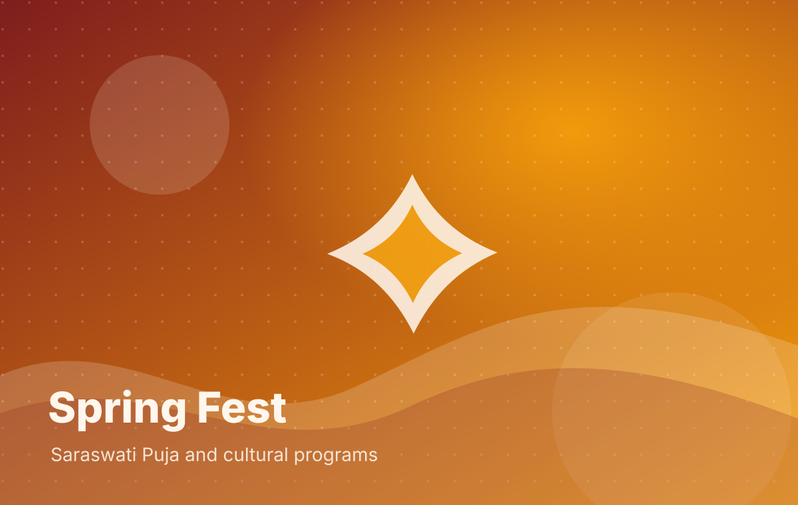
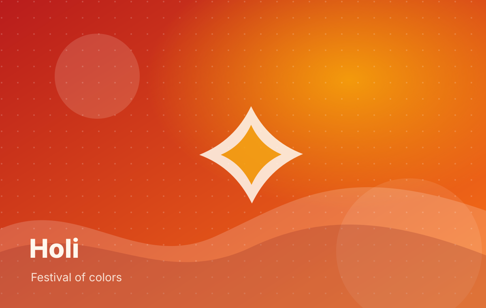
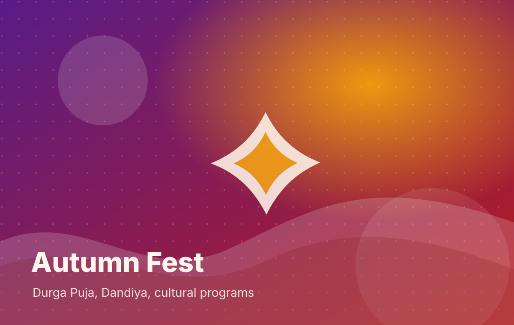
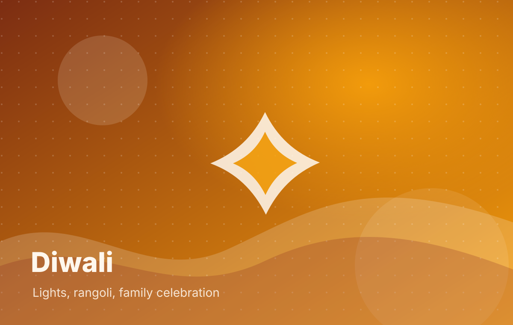

San Francisco Bay Area Bengali & Indian Cultural Nonprofit
Celebrating Culture. Building Community. Giving Back.
Baybasi brings families, artists, volunteers, sponsors, and community partners together through cultural programs, signature festivals, and charitable giving.
25+
Years in Service
Our Impact Snapshot
Culture powered by service
Baybasi combines community celebrations with charitable giving, volunteer service, and programs that support meaningful causes.
About Baybasi
A cultural home with a charitable heart
What began in 2000 as a small community group in Foster City among Bengali friends and families evolved into an Indian nonprofit charitable organization in 2008. Today, Baybasi serves communities throughout the San Francisco Bay Area with a deep commitment to cultural heritage, service, and giving back.
Read Our Story“
Where culture, community, and service come together.
From Saraswati Puja and Holi to Durga Puja, Diwali, seminars, volunteering, and charity partnerships, Baybasi creates a warm platform for families and supporters to participate in something meaningful.
Signature Events
Festivals that bring people together
Our annual events celebrate Bengali and Indian traditions through music, food, arts, worship, volunteering, and community connection.

Spring Fest
Saraswati Puja, cultural programs, lunch, snacks, dinner, and performances.

Holi
A public festival of color with live music, DJ, Dholi, food vendors, and family fun.

Autumn Fest
Durga Puja, Dandiya, gala cultural programs, artists, Dhak, and community meals.

Diwali
Diya decorations, Rangoli, cultural programs, kids activities, and Indian fair.
94%
of revenue goes toward programs and charitable work
Operational overhead is 5% or less.
Giving Back
Community events that create real impact
Baybasi has supported programs advancing education, mental health, women empowerment, disaster relief, and community service in India and the United States.
See Our ImpactJoin Us
Many ways to be part of Baybasi
Become a Member
Participate in programs, attend events, join leadership teams, and help shape Baybasi’s future.
Volunteer
Give your time to events, service programs, fundraising, cultural activities, and community support.
Subscribe / Attend
Stay informed about events, programs, subscriptions, student/senior options, and family-friendly gatherings.
Sponsor Baybasi
Support a credible cultural nonprofit while gaining visibility with a high-value Bay Area audience.
Sponsors & Partners
Visibility with purpose
Sponsor visibility can be organized by tier, with larger placement for higher tiers.
Platinum
LogoLogo
Gold
LogoLogoLogo
Silver • Bronze • Classic
LogoLogoLogoLogo